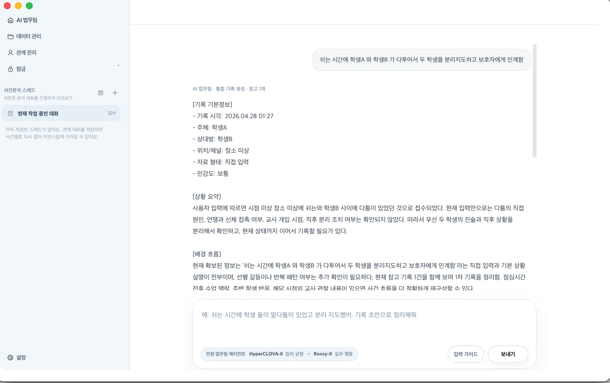

에이전트 기록 생성
작성하신 모든 기록은 SHA-256 해시 알고리즘을 통해 안전하게 암호화되어 저장됩니다.
- 데이터 임의 수정 및 훼손 방지
- 객관적인 소명 근거 자료로 활용

Engine By DRACE
분쟁기록 인식형 캐시 추론 가속화 엔진
기록은 기기 안에서 보존되고, 사건의 맥락은 에이전트가 정리합니다.
DRACE | On-device AI Performance
Baseline Hybrid vs DRACE
E2E Latency | Baseline 180s → DRACE 55s | 3.27× faster
TTFT | Baseline 30s → DRACE 9s | 3.33× faster
ERQS | Baseline 91.2 | quality parity
Memory footprint
Output TPS | Baseline 2.4 → DRACE 7.1 | 2.96× higher

밤늦은 학부모 전화, 감정 섞인 문자, "민원 넣겠다"는 압박. RoosyCozy는 악성민원, 법률 불안, 흩어진 기록을 설명 가능한 대응 흐름으로 정리해 선생님이 흔들리지 않도록 돕습니다.
늦은 전화와 장문 문자, 반복 연락 이력을 남겨 핵심 쟁점을 빠르게 파악합니다.
아동학대, 교권침해, 학교폭력 상황에서 사실과 조치를 근거 중심으로 정리해 소명 부담을 덜어줍니다.
수첩, 메신저, 상담일지에 흩어진 내용을 한 흐름으로 묶어 바로 대응에 활용할 수 있게 합니다.
RoosyCozy 가상모델 루지
작성하신 모든 기록은 SHA-256 해시 알고리즘을 통해 안전하게 암호화되어 저장됩니다.
파편화되어 흩어진 여러 기록들을 최적화 알고리즘이 분석하여 하나의 맥락으로 연결합니다.
수집된 기록을 바탕으로 정형화된 PDF 문서를 생성하여 서류 작성의 번거로움을 덜어줍니다.
RoosyCozy 가상 모델 ‘루지’
전화, 문자, 상담 요청이 한꺼번에 몰릴수록 대응은 더 빠르게 흔들립니다. RoosyCozy는 흩어진 대화와 메모를 하나의 흐름으로 정리해 기록, 보고, 소명 준비를 한 번에 이어줍니다.
반복 연락, 장문 문자, 통화 이력을 시간순으로 묶어 핵심 쟁점을 남깁니다.
무엇을 설명했고 무엇이 쟁점인지 한 화면에서 바로 파악할 수 있게 정리합니다.
내부 공유용 메모부터 제출용 기록 초안까지 이어져 급한 상황에서도 대응이 차분해집니다.
07 / MARKET POSITION
단순 메모 도구도, 판례 검색 도구도 아닙니다. 분쟁이 시작되는 순간부터 누가, 언제, 무엇을, 어떻게, 왜 이어졌는지 정리해 나를 지킬 기록을 만드는 시스템입니다.
민감한 사건 기록은 외부 서버로 보내지 않습니다. 학생, 학부모, 의뢰인, 내부 사건정보는 사용자 기기 안에서 처리됩니다.
단순 메모가 아니라, 사실관계·배경·조치·증거·타임라인을 처음부터 분쟁 대응 형식으로 남깁니다.
변호사 상담, 학교 보고, 내용증명, 내부 검토에 바로 넘길 수 있는 구조화된 기록으로 변환합니다.


RoosyCozy의 핵심 엔진은 실제 학회에서 입증된 기술을 바탕으로, 파편화된 사건 메모를 대응 가능한 구조로 재구성합니다. 그래서 단순 저장을 넘어, 추론 가능한 사건 원자료가 됩니다.
부족한 초기 기록 데이터를 AI가 스스로 증폭시켜, 빈틈없는 사건 타임라인을 예측하고 구성합니다.
수집된 증거들 사이의 논리적 연결 고리를 찾아내어, 교육청 소명 시 가장 유리한 대응 논리를 도출합니다.
RoosyCozy의 온톨로지(Ontology) 엔진은 선생님이 입력한 단순한 메모들 사이에서 ‘누가’, ‘언제’, ‘무엇을’, ‘어떻게’ 연결되는지를 분석합니다.
특정 학생 이름을 클릭하면, 그 학생과 관련된 1년 치의 상담, 갈등, 학부모 통화가 시간순으로 정렬됩니다.
오늘 발생한 사건의 원인이 지난달의 사소한 다툼에 있었음을 시스템이 감지하고 연결해줍니다.
정리된 사건 흐름은 변호사 상담, 학교 보고, 내부 검토에 바로 넘길 수 있는 패키지로 이어집니다.
교실 내 갈등 최초 인지
사실관계 쟁점 확대
후속 조치 및 증거 연결
중재 경과와 보호자 통화
상담 · 갈등 · 통화 · 조치 · 증거 자동 연결
REDEFINING THE CATEGORY
단순한 메모장이 아닙니다. RoosyCozy는 입력된 모든 기록을 암호화하고
위변조를 검증하여 안전한 디지털 증거로 만듭니다.
단순 저장이 아닙니다. 기기 또는 서명키를 기준으로 기록을 강력하게 봉인하고 검증하는 구조를 갖췄습니다.
메모나 기록이 저장된 뒤 단 한 글자라도 임의로 바뀌었는지 즉시 확인합니다. 기록 신뢰성의 가장 핵심적인 방패입니다.
최초 작성본과 이후 수정본이 덮어씌워지지 않고 리비전 형태로 연결됩니다.
언제 무엇이 바뀌었는지 증빙할 수 있습니다.
복잡한 기술이지만, 사용은 메모장처럼 간편합니다.
기록을 문장 단위의 'Fact'로 잘게 쪼개어 데이터베이스화 합니다.
쪼개진 사실 위에 감정, 규정 레이어를 겹쳐 입체적으로 분석합니다.
사건의 시발점(Root Cause)을 역추적하여 빈틈없는 논리를 만듭니다.
교육청 제출용 보고서 양식에 맞춰 자동으로 내용을 채워넣습니다.
"선생님, 종이 뭉치 말고 RoosyCozy 파일로 주세요."
완벽하게 정리된 기록은 다음 1년의 평화를 보장합니다. 클릭 한 번으로 법률 전문가와 AI에게 동시에 데이터를 동기화하세요.
"처음에는 혹시나 하는 마음에 불안해서 기록을 시작했습니다.
그런데 기록이 정리되니 신기하게도 두려움이 사라지더군요.
RoosyCozy는 싸우기 위한 무기가 아닙니다.
내일 다시 교실 문을 열고 아이들을 마주할 '용기'입니다."
Baseline 180s -> DRACE 55s
Baseline 30s -> DRACE 9s
2.96x higher throughput
Quality parity maintained
Compact on-device runtime
| Metric | Baseline Hybrid | DRACE | Improvement |
|---|---|---|---|
| E2E Latency | 180s | 55s | 3.27x |
| TTFT | 30s | 9s | 3.33x |
| TPOT | 420ms | 140ms | 3.0x |
| Metric | Baseline Hybrid | DRACE | Improvement |
|---|---|---|---|
| Output TPS | 2.4 | 7.1 | 2.96x |
| Metric | Baseline Hybrid | DRACE | Improvement |
|---|---|---|---|
| CPU-sec / case | 620 | 240 | 61%↓ |
| Tokens / CPU-sec | 0.38 | 1.05 | 2.76x |
| Metric | Baseline Hybrid | DRACE | Improvement |
|---|---|---|---|
| Memory footprint | - | 746MB | compact runtime |
| Peak Working Set | 2.8GB | 3.2GB | +0.4GB |
| Cache Pack Size | 0MB | 150MB | bounded |
| Metric | Baseline Hybrid | DRACE | Improvement |
|---|---|---|---|
| ERQS | 91.2 | 90.8 | parity |
| Quality Parity Rate | - | 96% | pass |
| Metric | Baseline Hybrid | DRACE | Improvement |
|---|---|---|---|
| Input-fact Hallucination | 1.2% | 1.1% | parity |
| Metric | Baseline Hybrid | DRACE | Improvement |
|---|---|---|---|
| Timeout Rate | 4.0% | 0.5% | 87%↓ |
표기 순서는 Metric / Baseline Hybrid / DRACE / Improvement 기준입니다.
기존 180초 파이프라인을 55초까지 줄여 사건 정리 응답 시간을 대폭 단축했습니다.
첫 토큰이 30초에서 9초로 줄어 사용자가 체감하는 시작 지연이 크게 낮아졌습니다.
Output TPS가 2.4에서 7.1로 올라가 동시 처리량과 마무리 속도가 함께 개선됐습니다.
케이스당 CPU 사용량은 줄이고, CPU 1초당 생성 토큰 수는 2.76배까지 끌어올렸습니다.
온디바이스 최적화 이후에도 품질 저하 없이 거의 동일한 정답 성향을 유지했습니다.
타임아웃 비율을 4.0%에서 0.5%로 낮춰 실제 운영 환경에서의 신뢰성을 높였습니다.
피크 메모리는 소폭 늘었지만, 캐시 팩을 150MB 범위로 제한해 운영 가능성을 확보했습니다.